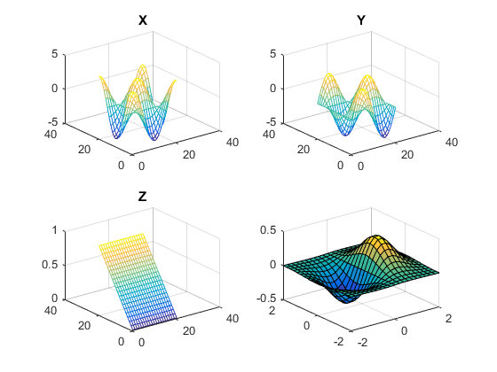

Basic operations
Contents
- Variable assignment
- Variable retrieval and selection
- Inverse / Transponierung
- Zeros, Ones and Randoms
- Matrix and Array Operations
- Apply action on every elemnt
- Matrix multiplication and single value multiplication
- Change number format
- Concatenation
- Magic Square
- Accessing arrays
- Equal spaced vectors
- View workspace content
- Save and load workspace
- Working with strings
- Number to String conversion
- Functions
- Print a string
- Clear output
- 2D Plots
- 3D Plots
- Subplots / Figures
- Working with files
- Loops
- Conditions
- Path folder
- Use help
Variable assignment
a = 1 b = [1 2 3] c = [1,2,3] d = [1,2,3;4,5,6]
a =
1
b =
1 2 3
c =
1 2 3
d =
1 2 3
4 5 6
Variable retrieval and selection
m = [1,2,3;4,5,6;7,8,9]
m =
1 2 3
4 5 6
7 8 9
Inverse / Transponierung
m' m''
ans =
1 4 7
2 5 8
3 6 9
ans =
1 2 3
4 5 6
7 8 9
Zeros, Ones and Randoms
zeros(1,3) ones(3,1) rand(3,3)
ans =
0 0 0
ans =
1
1
1
ans =
0.7922 0.0357 0.6787
0.9595 0.8491 0.7577
0.6557 0.9340 0.7431
Matrix and Array Operations
a = [1,2,3] a + 10
a =
1 2 3
ans =
11 12 13
Apply action on every elemnt
a + 2 a - 2 a * 2
ans =
3 4 5
ans =
-1 0 1
ans =
2 4 6
Matrix multiplication and single value multiplication
a = [1,2,3;4,5,6;7,8,9] b = [1,2,3;4,5,6;7,8,9] % Matrix Multiplication a*b % Single value multiplication a.*b
a =
1 2 3
4 5 6
7 8 9
b =
1 2 3
4 5 6
7 8 9
ans =
30 36 42
66 81 96
102 126 150
ans =
1 4 9
16 25 36
49 64 81
Change number format
format long sin(1) format short sin(1)
ans =
0.841470984807897
ans =
0.8415
Concatenation
a = [1,2,3] b = [a,a,a;a,a,a]
a =
1 2 3
b =
1 2 3 1 2 3 1 2 3
1 2 3 1 2 3 1 2 3
Magic Square
a = magic(3)
a =
8 1 6
3 5 7
4 9 2
Accessing arrays
a = [1,2,3;4,5,6;7,8,9]
a(2,2)
a(2,:)
a(:,2)
a(1:2,2)
%Delete from a Matrix
a(:,3) = []
a(3,:) = []
a =
1 2 3
4 5 6
7 8 9
ans =
5
ans =
4 5 6
ans =
2
5
8
ans =
2
5
a =
1 2
4 5
7 8
a =
1 2
4 5
Equal spaced vectors
start:step:end
1:5:16 a = [1 2 3 4 5 6 7 8 9 10] a(1:2:10)
ans =
1 6 11 16
a =
1 2 3 4 5 6 7 8 9 10
ans =
1 3 5 7 9
View workspace content
whos
Name Size Bytes Class Attributes Auswahl 101x151 122008 double AuswahlOrig 101x151 122008 double Bild 512x512x3 6291456 double FX 3x3 72 double Result 101x151 122008 double Vektor 786432x1 6291456 double X 512x512x3 786432 logical Y 21x21 3528 double Z 21x21 3528 double a 1x10 80 double ans 1x5 40 double b 2x9 144 double c 1x3 24 double concatText 1x23 46 char d 2x3 48 double i 1x1 8 double location 1x1 8 double m 3x3 72 double maximum 1x1 8 double otherText 1x9 18 char pic 512x512x3 786432 uint8 t 1x21 168 double text 1x25 50 char x 41x41 13448 double y 41x41 13448 double y2 1x201 1608 double z 41x41 13448 double
Save and load workspace
save myfile.mat load myfile.mat
Working with strings
Text is stored like all Matlab variables as array
text = 'some text' otherText = 'more text' % Concatenation is done the same way as with arrays concatText = [text,' and ',otherText]
text = some text otherText = more text concatText = some text and more text
Number to String conversion
a = 10 b = sin(1) text = [num2str(a),' or ',int2str(a),' AND ',num2str(b),' or ',int2str(b)]
a =
10
b =
0.8415
text =
10 or 10 AND 0.84147 or 1
Functions
a = [1,2,7;1,2,1]
b = [4,5,6;2,1,2]
max(a)
min(a)
% multiple return values
c = [1,2,3]
[maximum,location] = max(c)
sqrt(9)
pi
a =
1 2 7
1 2 1
b =
4 5 6
2 1 2
ans =
1 2 7
ans =
1 2 1
c =
1 2 3
maximum =
3
location =
3
ans =
3
ans =
3.1416
Print a string
disp('hello world')
hello world
Clear output
clc
2D Plots
x = 0:pi/100:2*pi; y=sin(x); % Possible color/linetype arguments bgr and +o* plot(x,y,'b+') xlabel('x-Achse') ylabel('y-Achse') title('Titel des Plots') % Use hold to enable multiple plots in the same window hold on y2 = x; plot(x,y2,'g:') hold off % Alternative you can enter multiple x/y values plot(x,y,x,y2)
3D Plots
Meshgric generates X where each value in a column is a value of the first input and Y where each value in a row is a value of the second input / first if only one exists
[X,Y] = meshgrid(1:3) [X,Y] = meshgrid(1:3,4:6) % 3D Plots Example 1 figure(1); [X,Y] = meshgrid(1:.1:10); Z = X.^2; subplot(1,3,1); mesh(Z); title('X^2'); Z = X.^2 + Y.^2; % On the plot, the axes describe the index of X and Y, not their actual % values subplot(1,3,2); mesh(Z); title('X^2 + y^2'); % If all axes are defined explizit, the values are displayed insted of the % index subplot(1,3,3); mesh(X,Y,Z); title('X^2 + y^2'); % 3D Plots Example 2 figure(2); [x,y] = meshgrid(-2:0.1:2); z = sin(x); mesh(z); % Hold on must be after initial drawing (otherwise only 2D Plot will be % created) hold on; z = y.^2; mesh(z); hold off; figure(3); % Surf creates a surface surf(z); % 3D Plots Example 3 figure(4); [X,Y] = meshgrid(-2:.2:2); Z = X .* exp(-X.^2 - Y.^2); surf(X,Y,Z)
X =
1 2 3
1 2 3
1 2 3
Y =
1 1 1
2 2 2
3 3 3
X =
1 2 3
1 2 3
1 2 3
Y =
4 4 4
5 5 5
6 6 6
 Subplots / Figures
t = 0:pi/10:2*pi; [X,Y,Z] = cylinder(4*cos(t)); subplot(2,2,1); mesh(X); title('X'); subplot(2,2,2); mesh(Y); title('Y'); subplot(2,2,3); mesh(Z); title('Z'); subplot(2,2,4); mesh(X,Y,Z); title('X,Y,Z'); figure(2); subplot(2,2,1); mesh(X); title('X'); subplot(2,2,2); mesh(Y); title('Y'); subplot(2,2,3); mesh(Z); title('Z'); subplot(2,2,4); mesh(X,Y,Z); title('X,Y,Z');
Working with files
% Modify files: % edit test % Run files: % test
Loops
a = [1 2 3] for i = 1:3 disp(num2str(a(i))) end i = 1 while i <= 3 disp(num2str(a(i))) i = i + 1; end
a =
1 2 3
1
2
3
i =
1
1
2
3
Conditions
i = 2; if (i < 2) disp('i is smaller than 2') elseif(i > 2) disp('i is bigger than 2') else disp('i is 2') end
i is 2
Path folder
Files to run must either be located in the current folder or in the search path. You can add a path by right clicking in the current folder and select Add to Path
Use help
% Get documentation with %doc mean % Get abbreviated text version of documentation with %help mean % Get demo and examples of Matlab %demo